Start by creating a new workcell process with the necessary plate swim lanes for each piece of labware that will be used. Insert a Run Sequence instrument process at each of the appropriate locations.
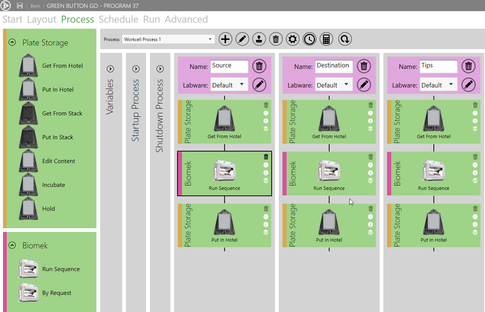
Launch the sequence editor by moving the the layout tab, selecting the liquid handler, and clicking the 'Sequences' button.
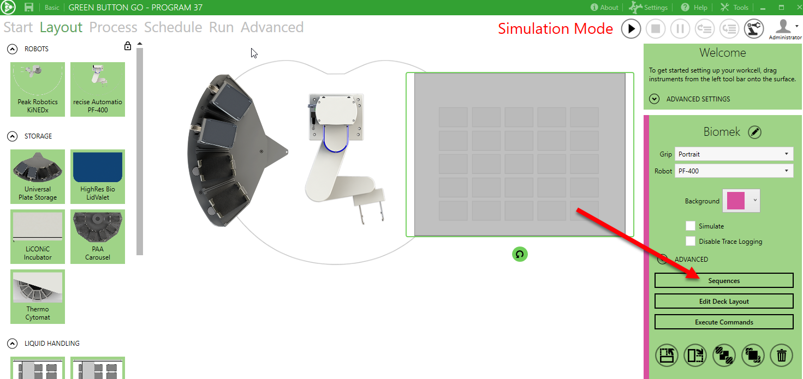
Click on the 'new' button to create a new sequence.
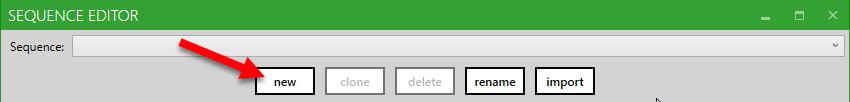
Enter a name for the sequence and press 'ok.'
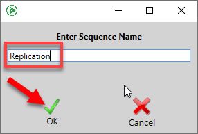
Ensure the correct workcell process is selected.
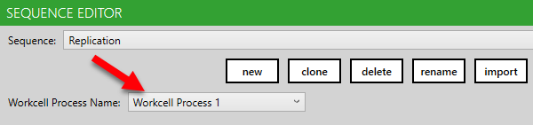
Click on the Plus button next to the step dropdown (lower left) to add three load plate steps. Ensure the correct Position, Plate Process, and Instrument Process are selected for each of them.
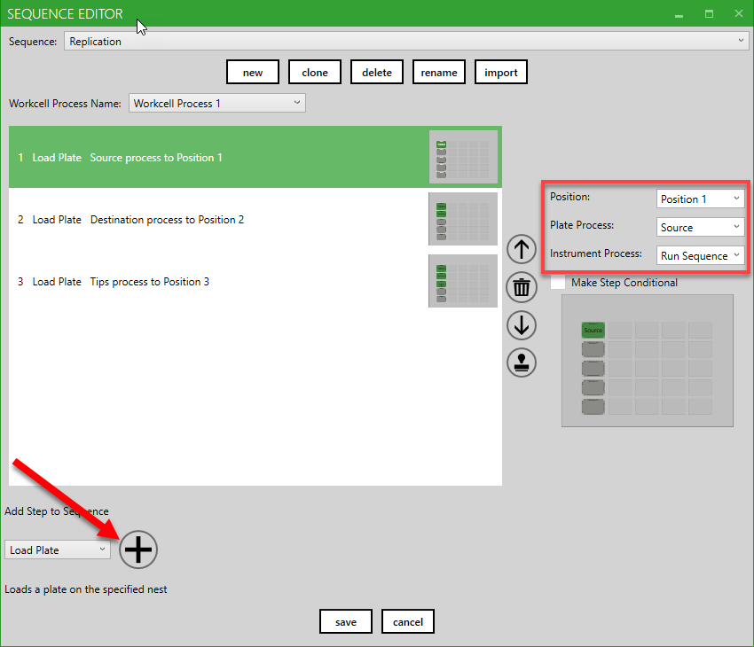
From the step selection drop down, select Load and Run Protocol, then click the plus button.
Specify the protocol name, the timeout, and the simulation time.
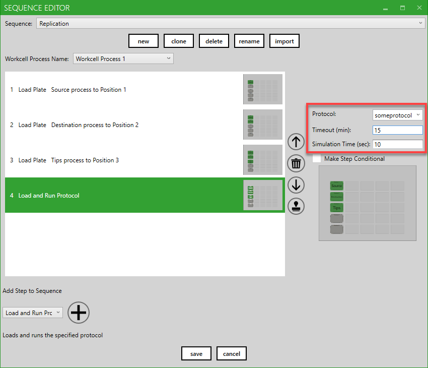
Select the Unload step from the step selection drop down and press the plus button. Repeat this for each plate that needs to be unloaded.
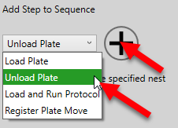
Ensure the correct Position, Plate Process, and Instrument Process are selected for each Unload Step.
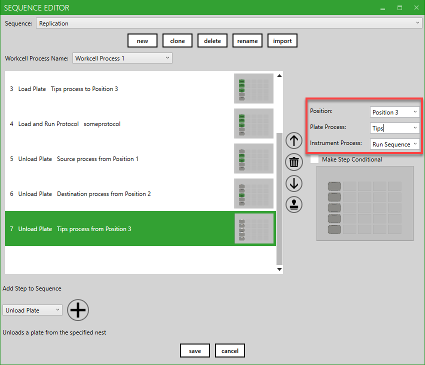
Click on the 'save' button at the bottom of the Sequence Editor to save the sequence.
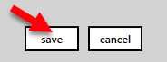
NOTE: Sequences are all saved in a .xml file called:
\My Documents\Green Button Go\[Program Name]\Data\[Instrument Name] Sequences.xml
This file can be copied into the 'Data' folder for other programs (before the program is loaded) if you would like to copy the sequences, or can be imported using the 'import' button.
After the sequence has been created, return to the Process tab and select each of the Run Sequence instrument processes and set the sequence to 'Replicate' or whatever else you may have called your sequence. Make sure that this is set on all of the instrument processes
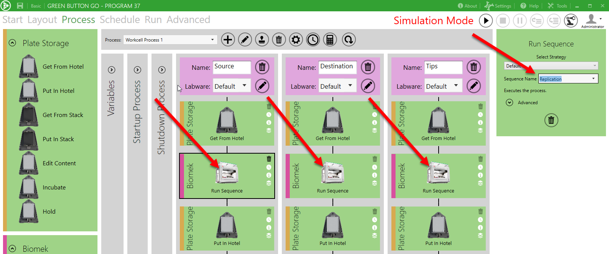
The workcell process should now be ready to run.
Each step that is added will have setable properties shown on the right side of the window. Some of the common step types are outlined below:
The steps listed below are also available for most sequence based drivers. Some variation exists since drivers can add additional unique step types and since new steps are periodically added.
*Set and Get Variables are implemented uniquely for each instrument since each liquid handler has its own rules regarding the allowed timing of such calls. For instance, some allow these to be called any time, and some require these to be set while a protocol is loaded in the liquid handler software.
**Set GBG Variable can be used to set the step counter for this sequence in order to perform a "go to" type operation. Note that the step counter will increment as soon as the step completes, so this must be taken into account to achieve the desired result.